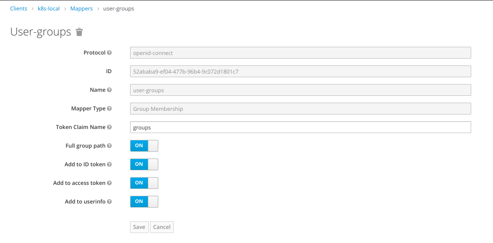

Keycloak
Keycloak does not support the groups scope by default. To integrate with Keycloak, first in Keycloak click on Mappers for your
client and click on the Create button. Fill in per the screenshot:

In your values.yaml, specify your issuer and remove the groups claim:
oidc:
client_id: XXXXXXXXXX
issuer: https://keycloak.lab.tremolo.dev/auth/realms/myrealm/
user_in_idtoken: false
domain: ""
scopes: openid email profile
claims:
sub: sub
email: email
given_name: given_name
family_name: family_name
display_name: name
groups: groups
Out of the box, keycloak assigns group names as the name of the group after a "/". So in your RBAC bindings you'll use that instead of just the name of the group. For instance if you have a group called group1 your RBAC binding would look like: